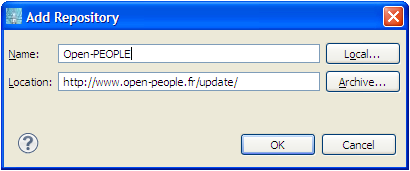
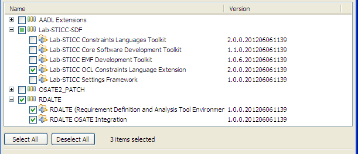
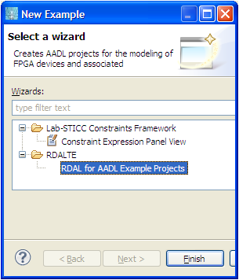

1.1 Installation from a Ready-to-use Eclipse Environment
RDALTE is part of the Open-PEOPLE Software Platform (OPSWP). A preview release of the platform can be downloaded from the Open-PEOPLE project web
site, after registration at the following URL: Open-PEOPLE Club. A confirmation mail will be
sent by the project coordinator including links from which the OPSWP preview release can be downloaded for the appropriate operating system platform (Windows or Linux).
1.2 Installation from the Update Site
RDALTE and its required features can be installed form the Open-PEOPLE update site. To install, from the Eclipse workbench, go
to menu "Help / Install New Software". From the dialog box that pops up, click "Add", then set the the name as "Open-PEOPLE"
and the location as "http://www.open-people.fr/update/" (Figure 1).

Figure 1: Creating the update site to install RDALTE.
Select the recently created update site, and check the RDALTE elements and the Lab-STICC OCL Constraint Language Extension as shown in Figure 2.
Ensure that "Contact all update sites..." is checked so that Eclipse can fetch what is needed from the other sites. Follow the
update manager instructions and restart Eclipse for the changes to be applied.

Figure 2: Installing RDALTE from the update manager.
1.3 Demo Workspace
A set of demo projects showing how RDALTE can be used to represent non-functional requirements for an electronic configurable component
(FPGA, Field Programmable Gate Array) modeled with the AADL is included with the release. To install the demo, open the menu
"File / New / Example". From the dialog box that is shown, select the "RDAL for AADL..." example project (Figure 3).

Figure 3: Installing the RDALTE AADL examples.
A set of AADL projects will automatically be installed in the workspace. A requirements specification is provided and located under a project
named "basic_application_xc5vfx100t_conf1". A software application containing threads executed by dedicated processors synthesized in a
Xilinx FPGA is modeled in AADL. A requirements diagram is provided defining various requirements related to the resources used by the
design such as power consumption, number of configurable logic elements, etc. The diagram can be opened by double clicking the
"fpga_xc5vfx100t_conf1.rdal_diagram" file. Open the "Advanced RDAL Editing" view and select a requirement to view information such as the elements
from the design expected to satisfy the requirement, and the requirement's constraints. Every requirement that is expressed formally with OCL has
been duplicated and expressed in Lute to illustrate usage of both languages. More information on this AADL modeling example can be found
here.